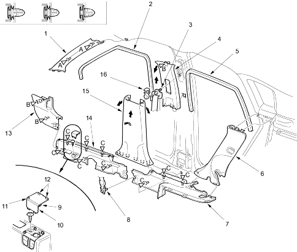

| Fastener Locations | ||||
A  : Clip, 2 : Clip, 2
(Black) |
B : Clip, 3
(White) |
C : Clip, 9 |
||
 |
|
|||
Interior Trim
|
20-206 |
NOTE:
Remove the trim as shown. To remove the rear door sill trim, remove the seat side trim (see page 20-207).
Install the trim in the reverse order of removal and note these items:
| Fastener Locations | ||||
| A : Clip, 2
(Black) |
B : Clip, 3
(White) |
C : Clip, 9 |
||
 |
|
|||